Recovery Orientation
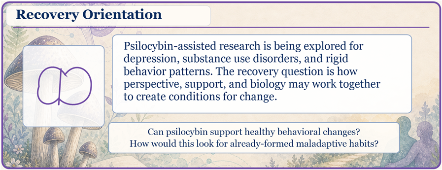
Back to live version | All versions
Removes a redundant recovery-research sentence from the Main Metabolic Routes intro while preserving the readability pass layout.
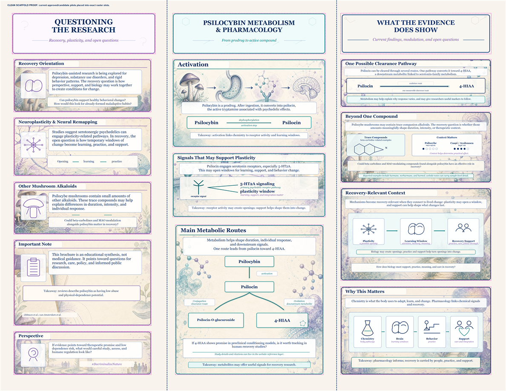

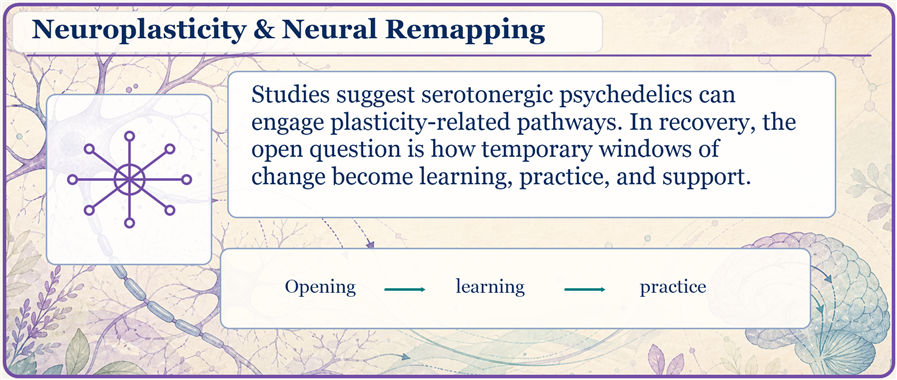
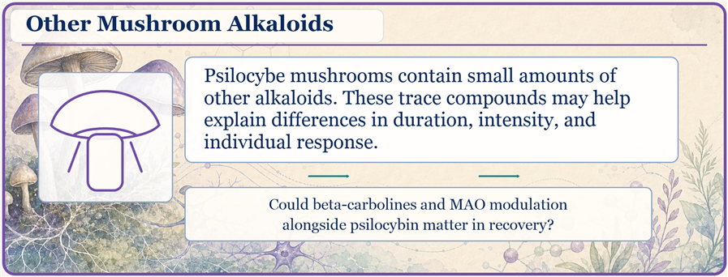
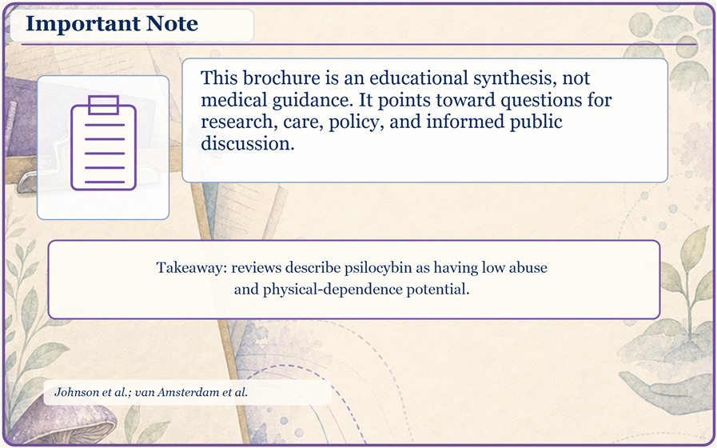
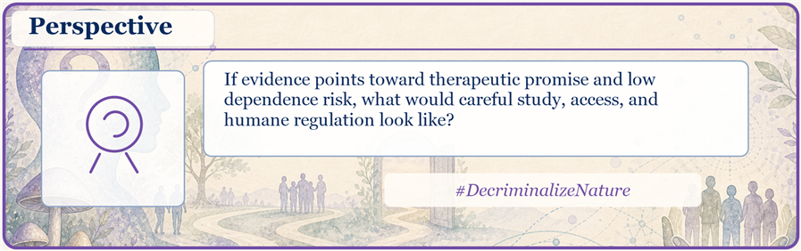
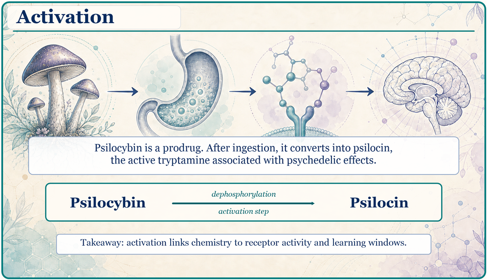
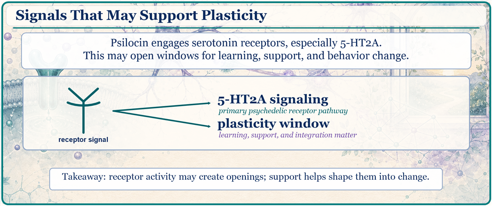
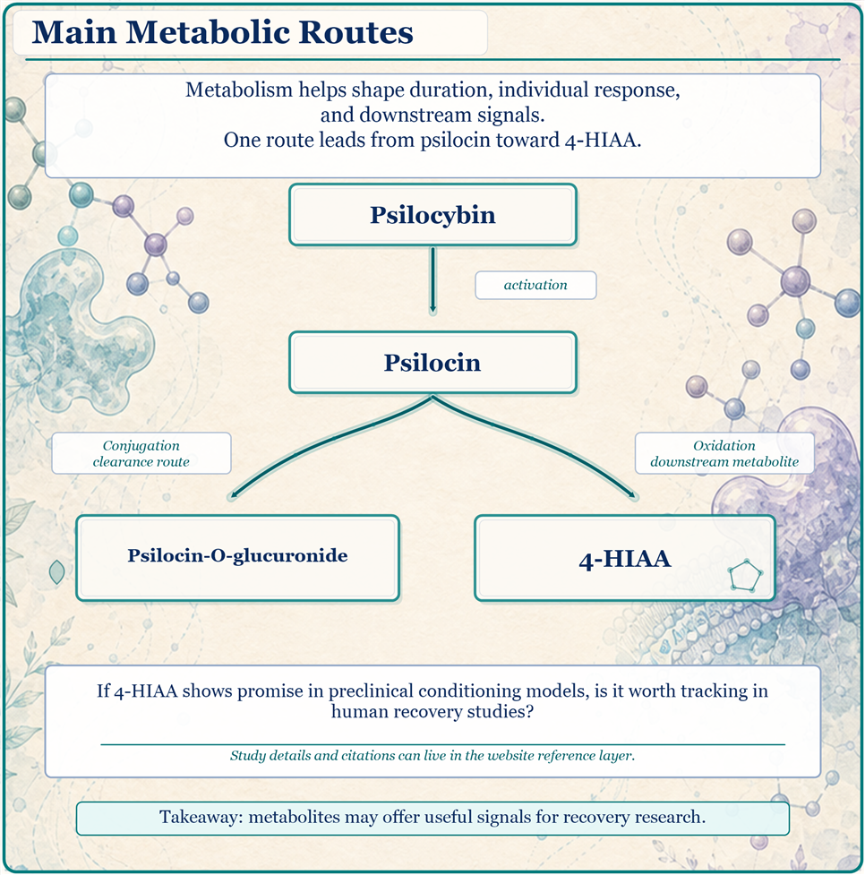
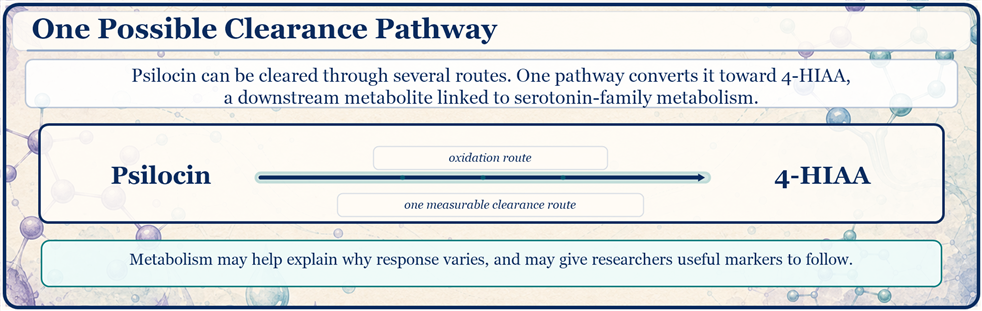
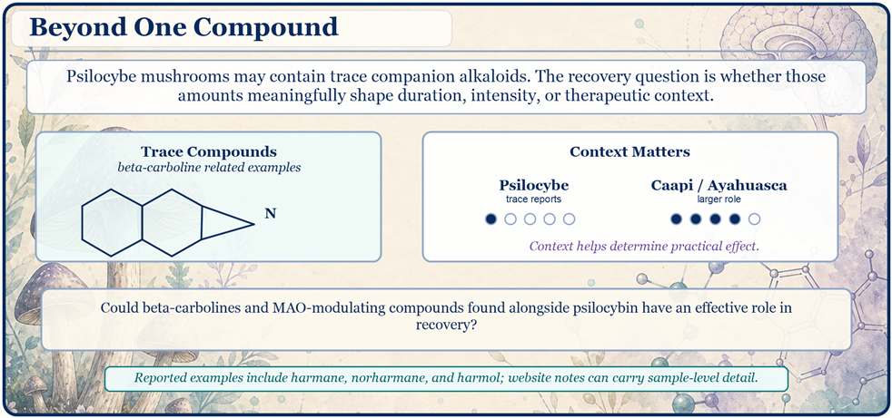
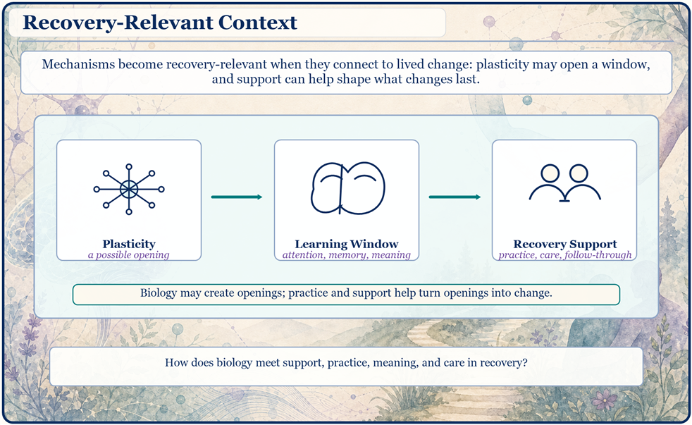
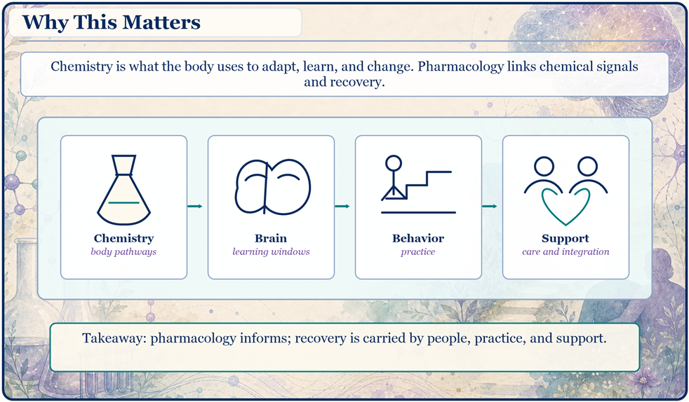